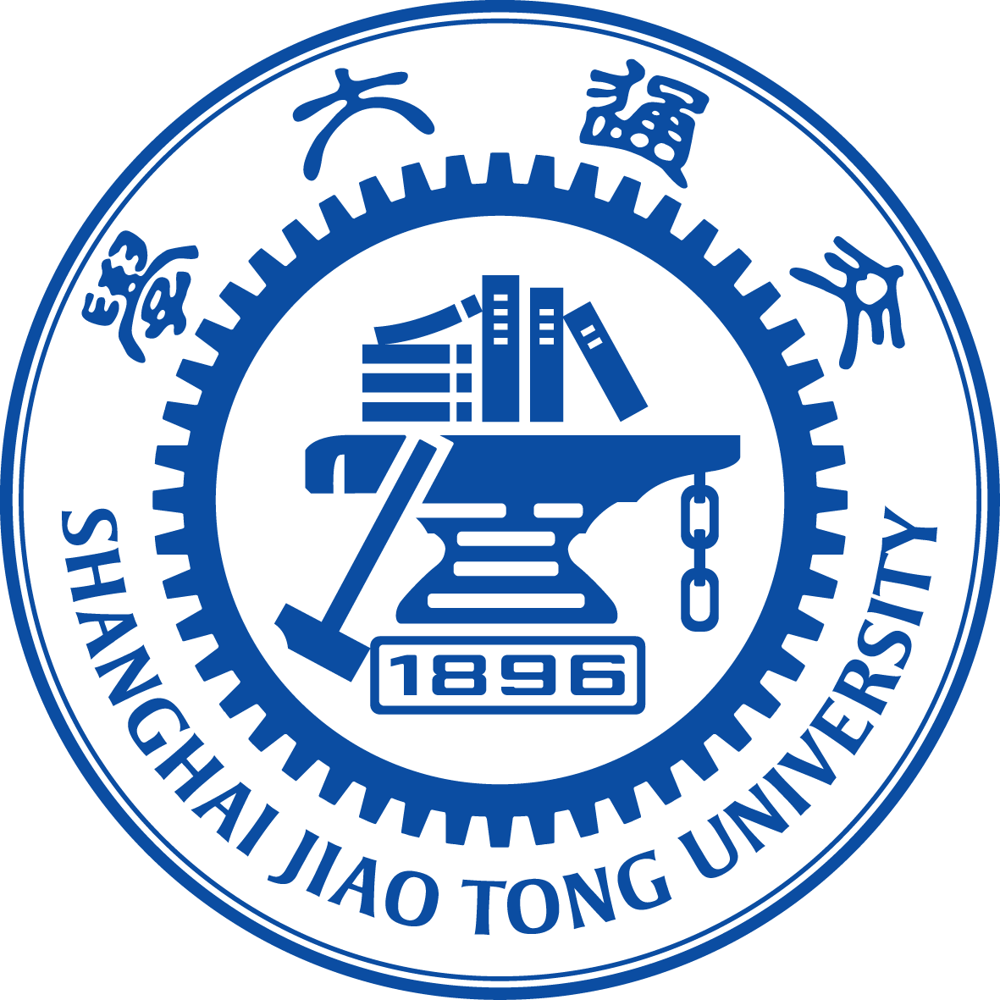
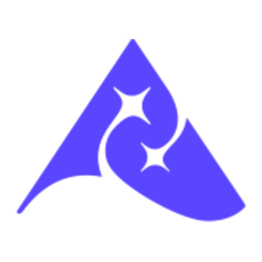
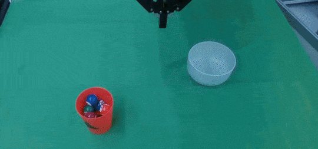

Xidian University
B.Eng. · OMEGA Lab
Rank 4 / 174 · National Scholarship
B.Eng. · OMEGA Lab
Rank 4 / 174 · National Scholarship

Research Assistant
Robot learning

Research Intern
Whole-body manipulation
Research Intern
Seed Robotics
PhD
World models & action

Object motion becomes the manipulation condition.

Bidirectional autoregressive learning of actions.

Effective perception, generalization, and coherent action.

World modeling in condition space for action generation.

Predict object motion from the current observation and language instruction.
Condition the manipulation policy on the generated motion representation.
Attach MBA to existing manipulation policies without redesigning the action backbone.

Dense Policy predicts a few structural keyframes, then expands them bidirectionally in logarithmic inference steps.

Predict key actions first, then recursively fill the intervals to form a coherent trajectory.
ICCV 2025 paper ↗The policy preserves global task structure while refining detailed local actions.
See all demos ↗
Mobile settings introduce larger visual variation and longer interaction horizons.
Base, torso, and arm actions must form a coherent whole-body trajectory.
A useful policy must transfer across objects, tasks, and environments.

Compress future observations into a non-redundant predictive space.
The VLA predicts conditions that are intrinsically relevant to action.
Future-aware conditions support precise and generalizable manipulation.

Inject future observations into the action inference pipeline.
Predict compressed future conditions alongside actions.
Carry future knowledge into the VLA without requiring future frames at test time.